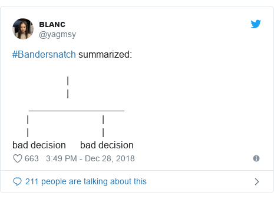
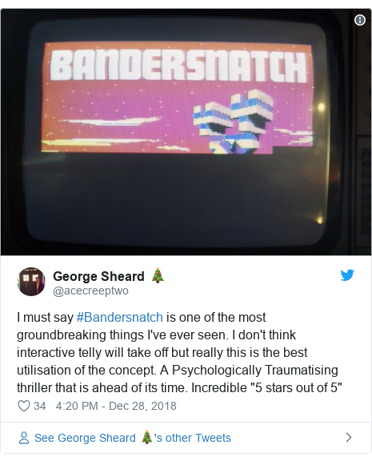
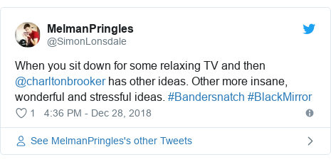
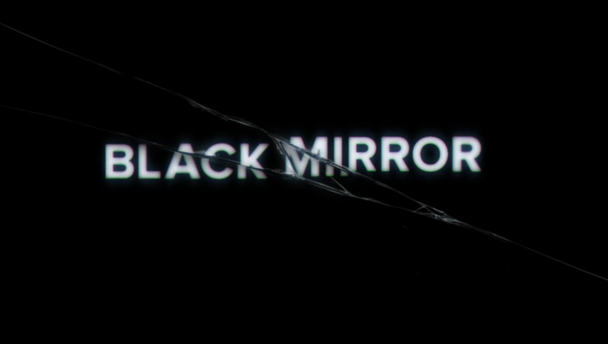

Reviews
Social Media
  

Storyline
1984. Stefan is developing a computer game based on the book 'Bandersnatch', a novel where you get to make choices and this determines the story. He has an opportunity to take his game to Tuckersoft, a software company, and have them release it. However, the more he works on the game the more his life emulates the game, with choices being made that are out of his control. Stefan appears to be going insane.Rating
IMDB : 7.4/10 RottenTomatoes : 7.5/10
MetaCritic : 6.9/10
RottenTomatoes : 7.5/10
MetaCritic : 6.9/10
Critics Review
The Guardian - Stuart Heritage"Fortunately, it works. Bandersnatch is a masterpiece of sophistication. From a user viewpoint, it is seamless... As an experience, it's remarkable. Even more remarkable, though, is the ambition of storytelling on display.
The Telegraph - Ed Power"What it adds up to is truly remarkable - a synapse-flensing caper that queries the nature of reality, the existence of free will and whether video games have got any better since the glory days of Lord of Midnight and Knight Lore... "In giving the viewer a smattering of choice, Black Mirror's most disturbing episode yet argues forcefully that none of us are really in control of anything."